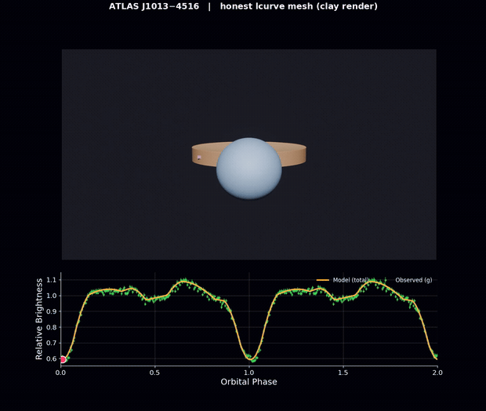

PhD student at MIT working on time-domain astronomy — self-supervised representations of astronomical time series, ML interpretability, and compact binary stars.

Physically faithful Blender visualizations of interacting compact
binary stars, driven directly by lcurve model fits — the
rendered mesh is the surface that produces the light curve.
Showcase: the eclipsing 8.56-minute binary ATLAS J1013−4516.